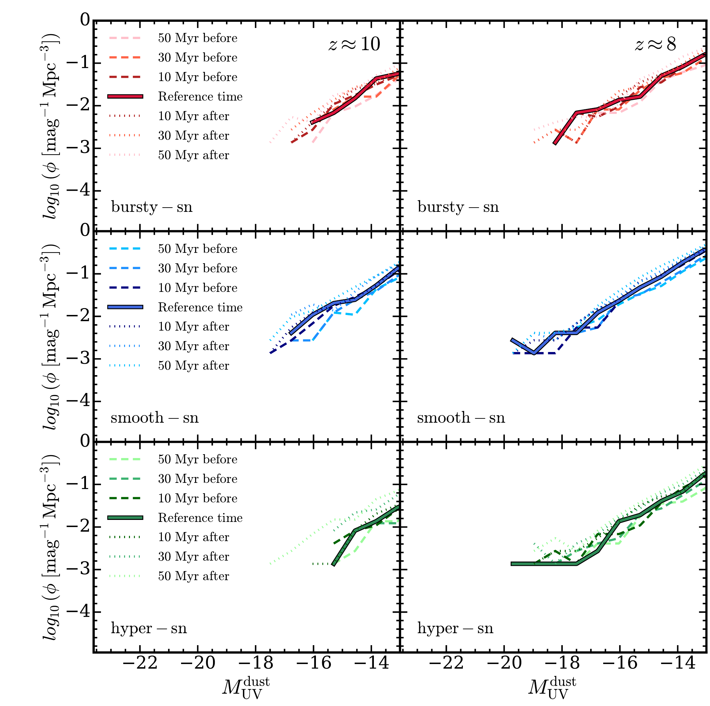
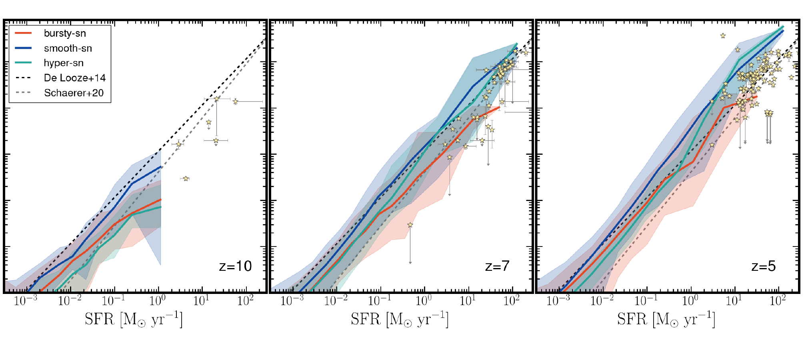

Visual archive
Images and movies
A growing collection of publication figures, matched simulation views, and visual explanations spanning cosmic volumes to individual galaxies.
From the cosmic web to observable emission

Three feedback histories

The research projects in plots





These local crops retain their source paper and figure number. Confirm the article licence and publisher credit requirements before public reuse. Review the source manifest.